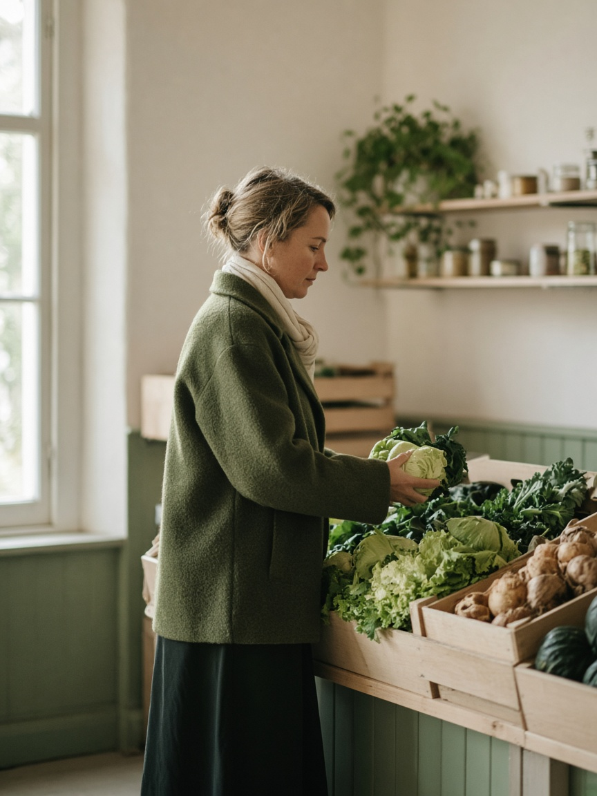
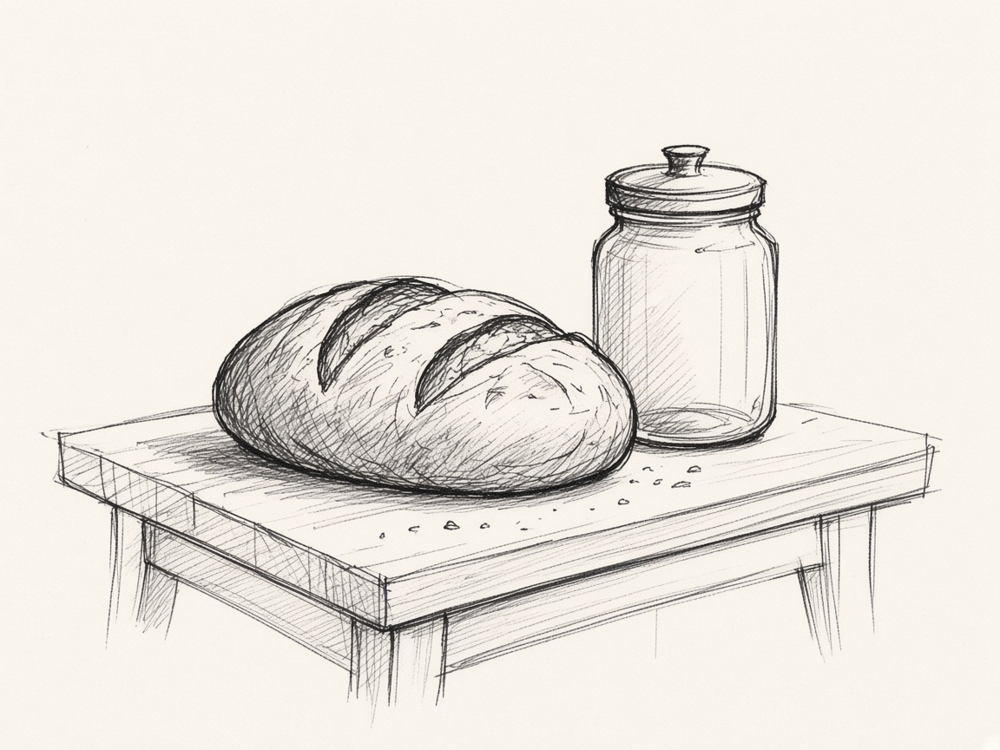
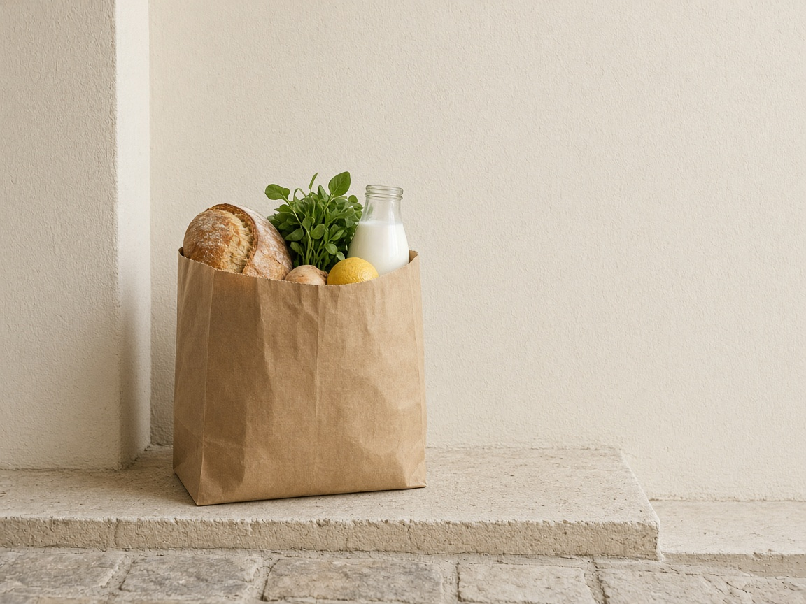
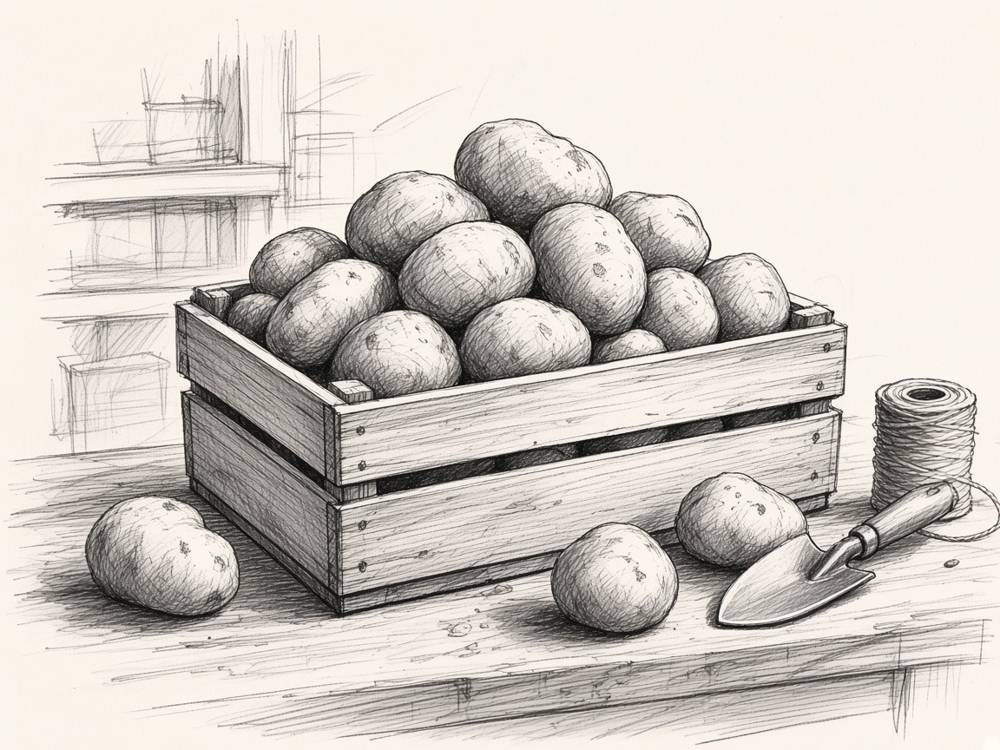
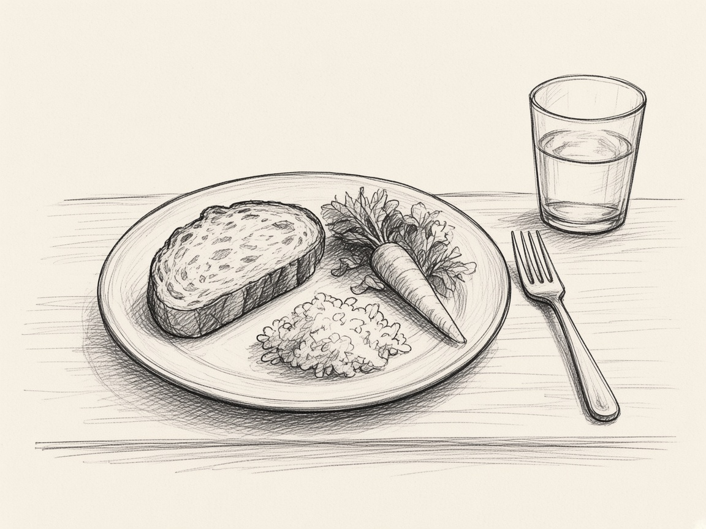

01 · Store customer
In my role as a store customer, I want to buy food and ingredients, so that I can meet my own and my loved ones’ need for food.
I shop for food and ingredients for myself and my loved ones.


Motivation
Habit and routine
As a grocery shopper, I often rely on familiar staple brands and trusted digital inspiration to make quick, safe dinner choices, making me reluctant to take a chance on unfamiliar products.

Motivation
Convenience
As a shopper, whether in-store or online, I prefer all my groceries in a single cart—fragmented errands steal too much time.

Motivation
Preferences and values
As a store customer, I want food that fits my preferences and values. I choose by things such as diet, health, climate awareness, the issues I care about, or a feeling of belonging with the place it comes from.

Threshold
Budget
As a grocery customer, I have to keep my food spending within strict budget limits.